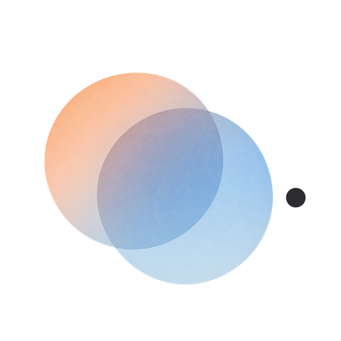

Your Photos.
Your Journeys.
SEC. quietly reads the time and place in your camera roll and brings every trip back — analyzed entirely on your device.


Found,
not filed.
No albums to sort. SEC. recognizes photos taken close in time and place and gathers them into a single trip — leaving everyday shots from home out of it.
- Automatic trip detectionOn-device
- Home areas, excludedCustom
- Re-scan anytimeLibrary
Relive
every moment.
Photos, places, and time — brought back together. Walk through each day in order: where you stopped, how long you stayed, and what you saw there.
- Day-by-day timelineJourney
- Travel path on a mapRoute
- Share as a poster cardShare
See where
you've been.
Every place you've traveled becomes a star, and every trip a constellation. Look back on a single year — or all of them, in one sky.
- Trip constellationsSky
- Year by yearArchive
Your trips stay yours.
On your device
Detection and analysis happen entirely on your iPhone. Your photos never leave it.
No account
No sign-up, no log-in. Open the app and your trips start appearing.
No ads, no tracking
No advertising or analytics SDKs. The only color in the app comes from your photos.
